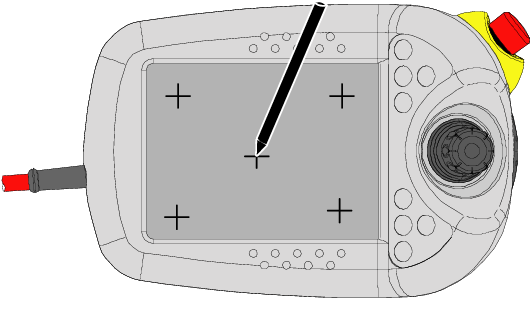

本节介绍如何重新校准触摸屏。 触摸屏在出厂时已校准，通常不需要重新校准。 根据 FlexPendant 型号，符号的外观会变化，但功能不变.

使用此程序校准触摸屏.
操作 | Information | |||
1 | 在 ABB 菜单上，点击 Control Panel（控制面板）。 | |||
2 | 点击 Touch Screen（触摸屏）。 | |||
3 | 点击 Recalibrate（重新校准）。 屏幕将在数秒钟内显示为空白. 屏幕上将出现一系列符号，一次一个. | |||
4 | 用指向装置点击每个符号的中心. |
| ||
5 | 重新校准完成. |

触摸校准功能用于在每个校准点捕捉多个触摸坐标或用于释放触摸。 然后计算所收集的坐标的平均值，该符号随后移至下一位置.
触摸控制器仅在坐标出现变化时将新坐标发送至 CPU。 如果您用触摸笔精确点击该符号，触摸坐标将不会改变。 随后触摸控制器将仅发送一个坐标，而触摸校准功能还将继续等待捕捉更多坐标.
避免此问题的最佳方法是点击该符号一秒钟，然后立即释放.